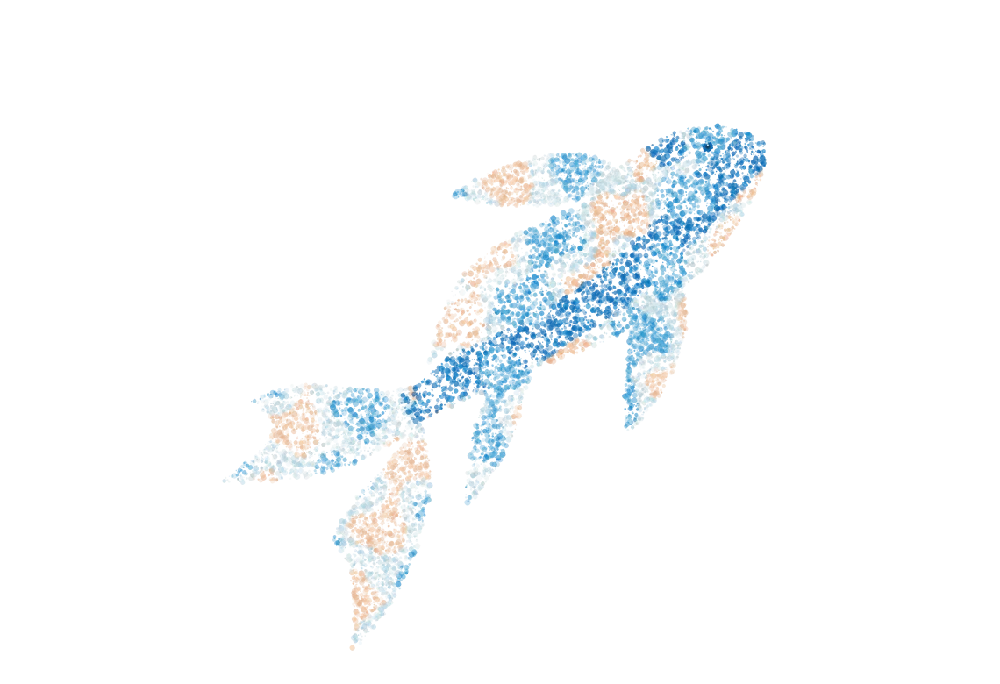

Research
Directions in language models, agent systems, and multi-agent collaboration, with papers and preprints.
Natural language processing · Language models · Agents
I’m a first-year master’s student at Nagoya University, with research interests in natural language processing, large language models, and AI agents.
Particle study / 001
An original generative sketch.
Many particles, one quiet current.

New preprint, Language Models Keep Abandoned Analyses: Residue and Adaptation after Garden-Path Sentences.
Started contributing to PenguinHarness, an open-source framework for agent self-evolution.
New note on latent communication: 隐状态传过去，接收模型就能用吗？
Joined Noetix Robotics as an Agent Algorithm Intern, working on the dialogue system for a humanoid robot.
Updated preprint, Where Reasoning Diverges: Localized Multi-Agent Debate for Multi-Hop Question Answering.
Began my master’s at the Graduate School of Informatics, Nagoya University.
Directions in language models, agent systems, and multi-agent collaboration, with papers and preprints.
Kirakira Agent and ShopAgent RL, plus open-source work on PenguinHarness and the Shared RSI Community.
The agent algorithm internship at Noetix Robotics, and education at Nagoya University and Nanjing Forestry University.
Research notes and less formal writing, starting with how a receiving model reads latent messages.
Background, interests, skills and languages, and how to reach me.